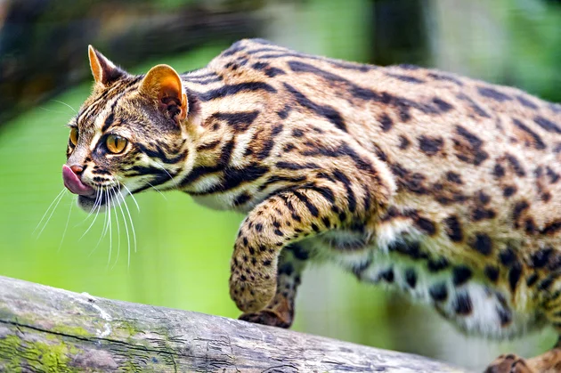

O que é um tipo canino?
O tipo canino é da família dos animais mamíferos, da ordem carnívora e normalmente é divida em duas tribos:
- Canini - Todas as espécies de domesticação e lobos.
- Vulpini - Todas as raposas.
Características
- Anatomia geral e estrutura externa
- Estrutura interna
- Os sentidos
- Reprodução e esterilização
- Envelhecimento
- Comunicação
- Locomoção e comportamento

O que é um felino?
O tipo felino é da família de animais mamíferos digitígrados, da ordem dos carnívora e existem muitas espécies selvagens, e os gatos como doméstica.
Características
- Apresentação física
- Sentidos
- Dentição
- Vocalização
O que é um réptiel?
O tipo réptiel constitue uma classe de animais vertebrados tetrápodes, ou seja, não possuem temperatura corporal constante.
Características
- Poucas glândulas
- Impermeável e coberto por escamas e/ou placas ósseas
- Pulmões bastante eficientes
O que é um tipo Ave?
O tipo ave é uma classe de seres vivos vertebrados caracterizada pela presença de penas, um bico sem dentes e uma oviparidade de casca rígida
Características
- Temperatura corporal e Pele
- Penas e Bico
- Voo e Canto
- Sistema Respiratório
- Sistema digestivo e reprodutor